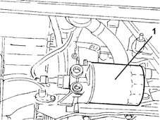
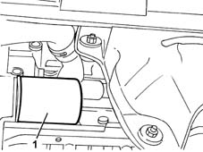
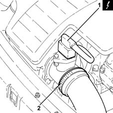
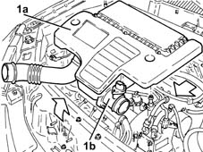
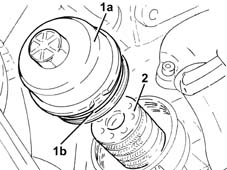

1084B30 engine oil filter r r
- Path
- Procedures > 10 ENGINE > 1084 ENGINE LUBRICATION SYSTEM > 1084B engine oil lubrication circuit > 1084B30 engine oil filter r r
- Kind
- repair procedure (removal / refitting; the operation number is the code)
- Applies to
- all engines; all production periods
- Interactive page
- https://sloeber94.github.io/elrnDB-lYpsln/en/#/2428964
Applies to: engines: 1.2 8v; all production periods
 Removing
Removing
 Refitting
RefittingPosition the vehicle on the ramp.
1. Undo the engine oil filter using a suitable tool and remove it.

Applies to: engines: 1.2 16v; all production periods
Removing
RefittingPosition the vehicle on the ramp.
1. Undo the engine oil filter using a suitable tool and remove it.

Applies to: engines: 1.4 16v; all production periods
Removing
RefittingPosition the vehicle on the ramp.
1. Undo the engine oil filter using a suitable tool and remove it.
Applies to: engines: 1.3 JTD; all production periods
Removing
RefittingMake sure that the ignition key is in the OFF position; then disconnect the battery negative (-) terminal.
 | Name | Connector |
|---|---|---|
- | Battery |
1. Disconnect the electrical connection from the air flow meter.
| Name | Connector |
|---|---|---|
1 | Air flow meter |
2. Loosen the band and disconnect the the turbocharger air inlet sleeve from the rigid pipe, air flow meter side.

Applies to: engines: 1.2 8v; all production periods
Refitting
RemovingLubricate the gasket with engine oil and fit the engine oil filter, tightening fully by hand.
Proceed with refitting 0010T11 engine oil check level and top up .
Remove the car from the ramps.
Applies to: engines: 1.2 16v; all production periods
Refitting
RemovingLubricate the gasket with engine oil and fit the engine oil filter, tightening fully by hand.
Proceed with refitting 0010T11 engine oil check level and top up .
Remove the car from the ramps.
Applies to: engines: 1.4 16v; all production periods
Refitting
RemovingLubricate the gasket with engine oil and fit the engine oil filter, tightening fully by hand.
Proceed with refitting 0010T11 engine oil check level and top up .
Remove the car from the ramps.
Applies to: engines: 1.3 JTD; all production periods
1. Remove the air filter (1a) complete with air flow meter (1b) by releasing from the underlying pins and then from the rear fastenings.

Applies to: engines: 1.3 JTD; all production periods
Undo the bolts and remove the engine oil filter top cover.
1. Unscrew and remove the cartridge oil filter cover (1a) complete with O-ring (1b).
2. Withdraw and remove the cartridge oil filter.

Applies to: engines: 1.3 JTD; all production periods
Refitting
RemovingRefit the cartridge oil filter in its seating.
Refit in its seating the cartridge oil filter cover complete with O-ring and tighten to the specified torque.
 | Fastening | Component | Ø | Value (daNm) |
|---|---|---|---|---|
- | - | - | - | - |
Refit in its seating the cartridge oil filter top cover and secure with its bolts.
Replace the air filter, complete with air flow meter, in its housing.
Connect the air intake sleeve to the turbocharger, air flow meter side, and tighten the band.
Connect the electrical connection to the air flow meter.
Connect the negative (-) battery terminal.
Topics linked from this page (3)
- 0010T11 engine oil check level and top up
- A1B Battery ( BATTERY NEGATIVE )
- K41 Air flow meter ( ENGINE )